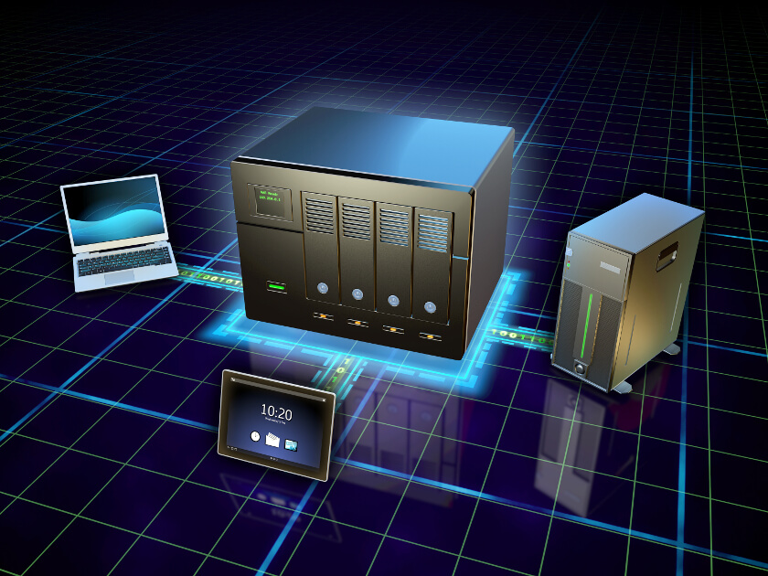
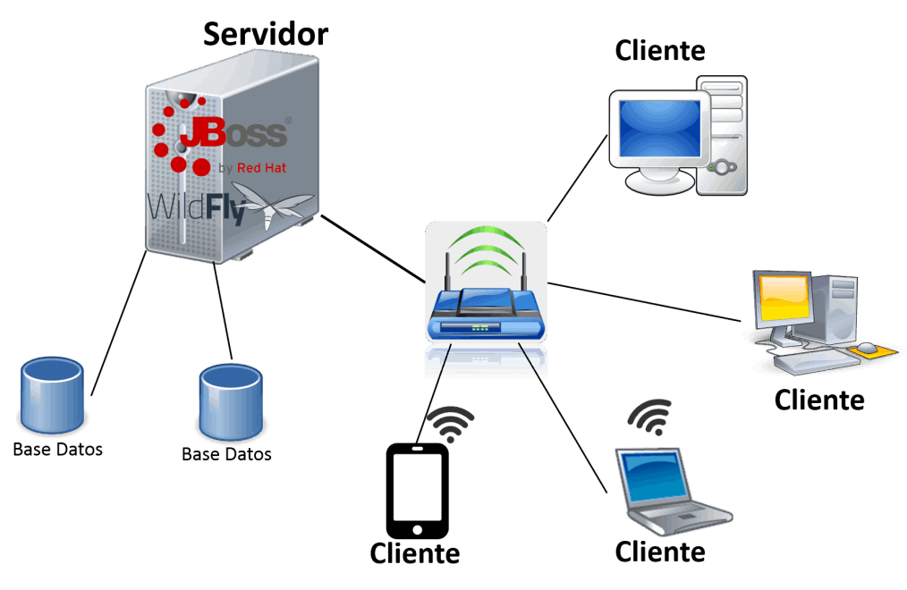

Arquitectura Distribuida en un Entorno Web
En el mundo actual de aplicaciones web de alto rendimiento y escalabilidad, las arquitecturas distribuidas han surgido como una solución fundamental. Estas arquitecturas permiten la distribución de la carga de trabajo en varios servidores, lo que resulta en un mejor rendimiento, alta disponibilidad y mayor capacidad de escalado. En este contexto, exploraremos los elementos clave de hardware y software necesarios para implementar con éxito una arquitectura distribuida en un entorno web. Desde servidores y balanceadores de carga hasta servidores de aplicaciones y bases de datos distribuidas, descubriremos cómo todos estos componentes trabajan en conjunto para ofrecer una experiencia web eficiente y confiable
Clasificando los elementos en hardware y software, podemos entender mejor los componentes necesarios para implementar una arquitectura distribuida en un entorno web.
Hardware: Los componentes físicos para soportar una arquitectura distribuida eficiente:
- Servidores: Los servidores juegan un papel fundamental en una arquitectura distribuida. Estos equipos potentes son responsables de ejecutar y alojar los diferentes servicios y aplicaciones web distribuidas. Pueden ser servidores físicos o máquinas virtuales.
- Sistemas de respaldo de energía (UPS): Un sistema de respaldo de energía garantiza que los servidores y otros dispositivos críticos en la arquitectura distribuida no se vean afectados por interrupciones de energía. Esto proporciona una mayor disponibilidad y evita la pérdida de datos.
- Almacenamiento distribuido: Para mantener los datos de manera redundante y accesible desde múltiples servidores, se requiere un sistema de almacenamiento distribuido. Esto puede incluir sistemas de almacenamiento en red (NAS) o matrices de discos, que permiten el acceso y la actualización de datos de manera distribuida.
- Unidades de estado sólido (SSD): Los SSD son dispositivos de almacenamiento más rápidos y confiables en comparación con los discos duros tradicionales. Pueden utilizarse para almacenar y acceder rápidamente a los datos en los servidores, mejorando el rendimiento de la arquitectura distribuida.
-
Dispositivos de red: Enrutadores, switches y firewalls son necesarios para administrar la conectividad y seguridad en la red. Estos dispositivos facilitan la comunicación entre los diferentes componentes de la arquitectura distribuida y aseguran la protección de los datos y la infraestructura.

software: Conjunto de instrucciones lógicas, programas y datos esencial para una arquitectura distribuida:
- Servidor web: Un servidor web, como Apache HTTP Server o Nginx, es necesario para recibir y responder a las solicitudes web entrantes. Estos servidores se encargan de servir las páginas web y entregar los recursos solicitados a través del protocolo HTTP.
- Servidor de aplicaciones: Dependiendo de la tecnología utilizada, un servidor de aplicaciones como Tomcat, JBoss o Node.js puede ser requerido para ejecutar y administrar la lógica de la aplicación distribuida. Estos servidores proporcionan un entorno de ejecución para las aplicaciones web distribuidas.
- Bases de datos distribuidas: Si se requiere persistencia de datos, las bases de datos distribuidas como MongoDB, Cassandra o Apache Hadoop permiten almacenar y consultar datos distribuidos en varios servidores. Estas bases de datos están diseñadas para garantizar la escalabilidad y la disponibilidad de los datos en un entorno distribuido.
- Middleware: El middleware actúa como una capa de software entre los diferentes componentes de la arquitectura distribuida. Proporciona herramientas y servicios para facilitar la comunicación y la coordinación entre los componentes distribuidos. Ejemplos comunes de middleware son RabbitMQ, Apache Kafka o ActiveMQ.
-
Sistemas de gestión de contenedores: Herramientas como Docker y Kubernetes permiten la creación, implementación y administración de contenedores. Los contenedores ofrecen una forma eficiente y flexible de empaquetar aplicaciones y sus dependencias, lo que facilita la implementación y escalado en una arquitectura distribuida.
